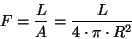
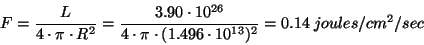

The flux is the amount of energy that passes through a unit area each second.
Astronomers use flux to denote the apparent brightness of a celestial body. The apparent brightness is defined as the the amount of light received from a star above the earth atmosphere passing through a unit area each second. Therefore, the apparent brightness is simply the flux we receieve from a star.
The flux measures the rate of flow of energy that passes through each cm^2 (or any unit area) of an object's surface each second. The detected flux depends on the distance from the source that radiates the energy. This is because the energy has to spread over a volume of space before it reaches us. Let's assume that we have an imaginary balloon that encloses a star. Each dot on the balloon represents a unit of energy emitted from the star. Initially, the dots in an area of one cm^2 are in close proximity to each other and the flux (energy emitted per square centimeter per second) is high. After a distance d, the volume and surface area of the balloon increased causing the dots to spread away from each. Consequently, the number of dots (or energy) enclosed in one cm^2 has decreased as illustrated in Figure 1.
The flux is inversely proportional to distance by a simple r^2 relation. Therefore, if the distance is doubled, we receive 1/2^2 or 1/4th of the original flux. From a fundamental standpoint, the flux is the luminosity per unit area:

where (4 * PI * R^2) is the surface area of a sphere (or a balloon!) with a radius R. Flux is measured in Watts/m^2/s or as commonly used by Astronomer: Ergs/cm^2/s. For example, the luminosity of the sun is L = 3.90 * 10^26 W. That is, in one second the sun radiates 3.90 * 10^26 joules of energy into space. Thus, the flux we receive passing through one square centimeter from the sun at a distance of one AU (1.496 * 10^13 cm) is:
